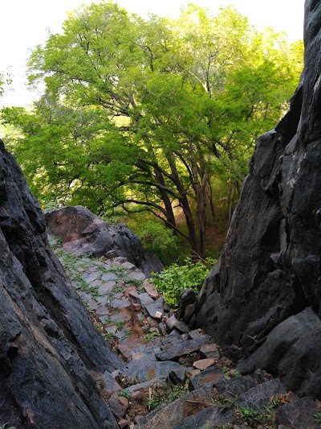

Theerthamalai, Tamil Nadu Theerthamalai in Dharmapuri district of Tamil Nadu is an emerging destination for rural tourism in the country. The name of the village translates to mean ‘The Hill of holy Water' and has a temple that dates back to the 7th century. The Theerthamalai temple that derives its name from the springs originating here along with the waterfalls called Rama Theertha and Hanuman Theertha are places worth visiting. Enjoy the calm and quiet that only such villages can provide..

Mail your local guide